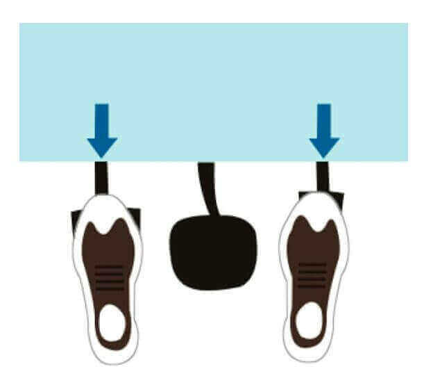
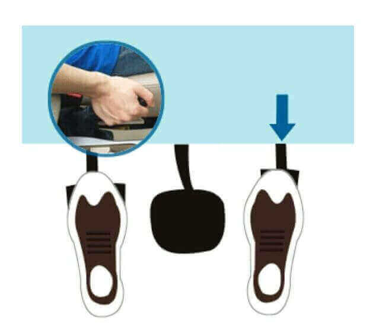
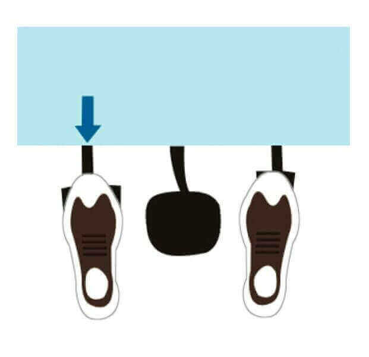
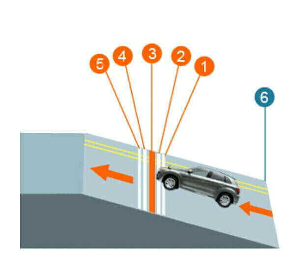

操作要求
坡道的坡度必须大于等于10度，考C1驾照的陡坡长度要大于等于20，在考试过程中，学员在陡坡停车后，必须在30秒内起步，否则就算失败
操作步骤
1轻点油门，慢松离合器;

2车身抖动，松手刹同时略加油;

3一经起步慢松离合。

操作技巧

1挂一档，打右转向灯，车体向右靠，观察右后视镜。当车体右侧距离6号线(如上图)30CM以内时，会正方向轻踩油门保持在1500转直线行驶。
2观察左后视镜，当1线和左后视镜下沿与眼睛成一线时，踩下离合，放下油门，当3线中心和左后视镜下沿与眼睛成一条线时，踩刹车，拉紧停车驻动器，停车到位。
3打左转向灯，慢抬离合，当车身有抖动的感觉时或发动机声音变沉闷，左脚保持不动，左脚微松离合器，使转速降至1500转/分时，慢放手刹，车即启动向前行进，坡道起步完成。
4等车完全上坡之后松开油门，关闭转向灯，顺利下坡，操作完成。
特别注意
1上坡前做到三步。上坡道看车头右1/3点对准边线，车体回正，保持方向直线行驶。车体距离边线30CM以内，当观后镜根部与停车线上沿成一线时停车，保险杠正好在停车线上。
2慢抬离合，当车身有抖动感觉时或发动机声音变沉闷，左脚停住不动，右脚轻踩油门，转速接近2000转/分时，右脚不动，左脚微松离合器，使转速降至1500转/分时，慢放手刹，车即向前行进。
3坡道千万不能踩离合、踩油门。